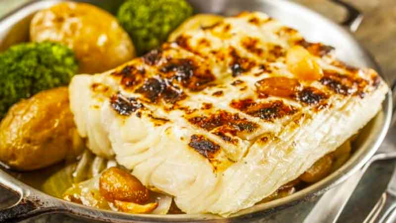

Codfish

Description
Traditional portuguese recipe
Grill codfish
Ingredients
- 1 Kg of codfish in fillets
- 1,5 Kg of potatoes
- 2 big onions
- 5 cloves garlick
- olive oil
- salt
Steps
- Make a fire on your grill
- When the embers are readdy, rinse and dry the codfish.
- Lightly oil the grates and place the fillets in the grill.
- Grill the fillets until they achieve a golden/browned color on both sides.